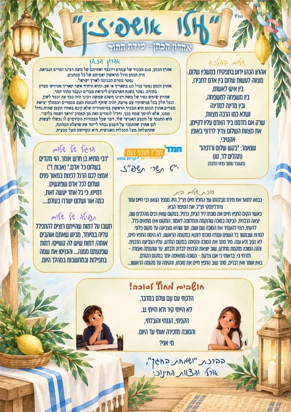
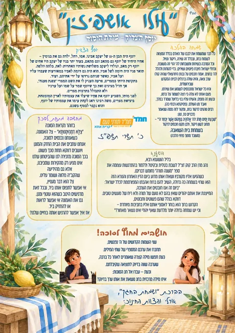
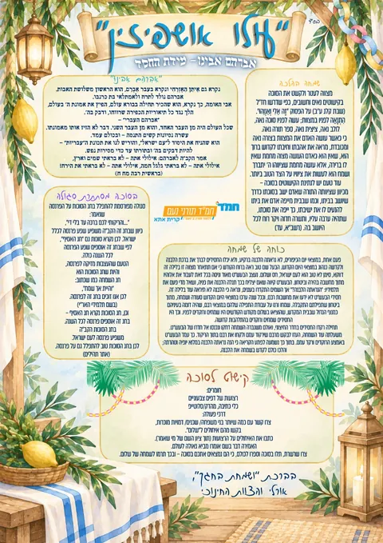

שבעה לילות, שבעה אורחים, שבע מידות
בכל לילה של חג הסוכות מתארח בסוכה אחד מהאושפיזין, ואיתו המידה המיוחדת שלו. לכל לילה יש דף לימוד צבעוני: מי היה האורח, הלכה מהחג, מחשבה מתחת לסכך, סיפור מגדולי ישראל וחידה. ולכל דף יש חידון.
דפי הלימוד: חמ״ד תורני נעם, קרית אתא · סוכות תשפ״ז



למורים: כל תלמיד נרשם לחידון עם שם, כיתה ובית ספר, והתוצאות נשמרות. ברשימת התלמידים החכמים שבתחתית כל חידון אפשר לראות מי סיים, ולסנן לפי כיתה או בית ספר.